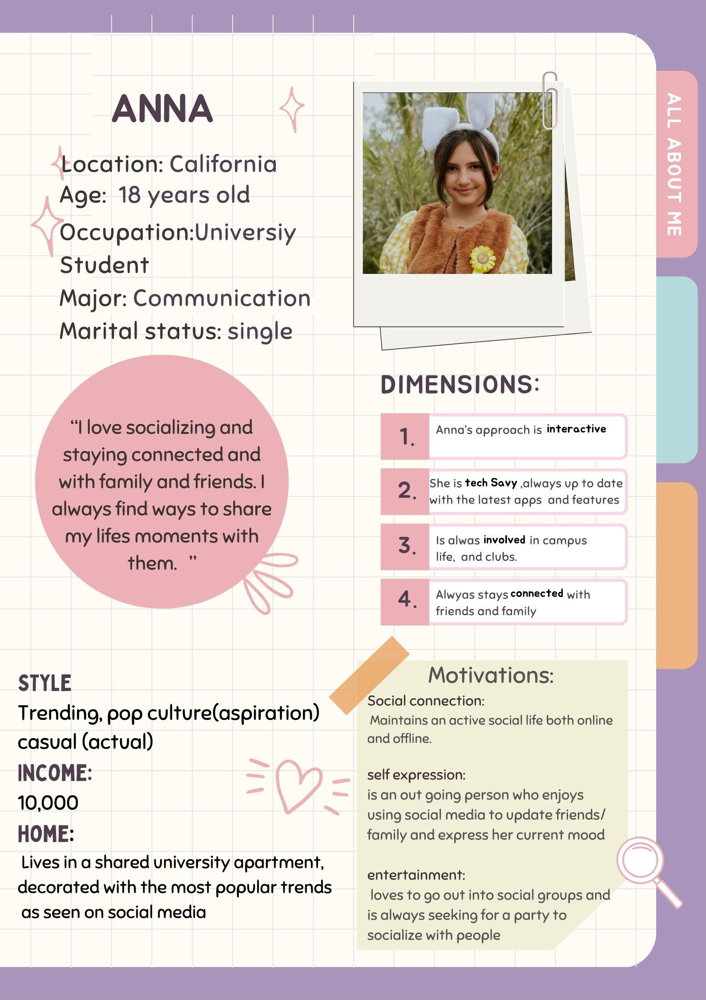

One piece of software I have personally used and believe is designed well is Snapchat. Snapchat is a social media platform that focuses on communication, and what sets it apart from other platforms is its user-friendly interface and simple design. When you first open Snapchat, you're immediately greeted by the camera, allowing you to quickly capture photos or videos, known as "snaps." This feature is effective because it allows users to readily capture and share moments with others as soon as the app is launched. Once a photo is taken, users can easily save it or send it to others. Snapchat also allows customization of these snaps with text, stickers, filters, sounds, and more, making the experience interactive and personalized. One of Snapchat's key implementation is its default auto-delete feature, where messages disappear after being viewed. This design choice appeals to users who may not want messages to be saved, but also gives users the flexibility by allowing them to save specific messages, images, or videos if they want. The platform is clearly designed with its target audience of teens and adults in mind. Snapchat also allows users to personalized avatars known as Bitmojis,which adds fun and personal touch to the app. Features like Snap Map allow users to see their friends locations, and stories allow users to share moments from their day, which enhances social interaction and engagement keeping users hooked and using the app longer.
Good software design is important because it impacts user experience and engagement. Good software design is intuitive and easy to use, which is important in making users want to continue to use it. Software with good design can easily be updated which makes it more adaptable to future changes, aswell as cutting costs as there is are less bugs and errors reducing the need to fix it often.
(1) In the requirements gathering stage, we are identify what problems the software should solve and who its target users will be. During this process we must communicate with stakeholders through several methods such as interviews, questionnaires, surveys, observations, brainstorming, and study documentation. Creating user stories from the perspectives of users is also important to identify potential users, their needs, and how the software will benefit them. A requirements document is developed which is used by clients, users, and developers. The document should follow a defined standard structure, be easy to modify, and ensure each requirement is uniquely identifiable through a unique ID or number. It is also important to use simple language to make it easier to read and understand. The requirements document must then go through an inspection process to identify any issues. A validation checklist should be created to ensure the requirements are complete, non-contradictory, ect. Gathering requirements is important for understanding the problem the software is solving, what the client expects the software to do, who the users are, what their needs are, and how they will interact with the software. This stage is important as it is the foundation for all future stages of the software development. It also prevents misunderstanings and unmet expectations. Poorly defined requirements can lead to delays, increased costs, and other failures.
(2)Software that I chose: Snapchat
Software that I chose: Snapchat
Communication is important in software development as it begins right from the requirements stage. Clear communication is important in early stages as it affects subsequent stages of the development. For instance, if there’s a miscommunication during the requirements gathering stage with a client, it can lead to other misunderstandings with other team members, and then result in a final product that doesn’t meet the client’s expectations. It is important in the requirements stage to communicate with the client not just through words, but through voice, tone, and body language. Communication and collaboration is also important in the design stage as it is important to collaborate together to answer the critical "how" question. Three key elements of effective communication is actively listening to the clients, developers, and other collaborators. This involves being attentive and open to everyone’s ideas, concerns, and thoughts, while also being empathetic and considerate of everyones feelings. The second element is that it’s important to ask open ended questions that allow the collaborators to fully express their visions and ideas rather than leading them to a narrow answer to achieve more detailed feedback and ideas. Lastly it's important to identify any communication barriers and come up with strategies to overcome these barriers.
Personal Experience:
I once worked in a group project where poor communication lead to a unstructured presentation that lacked cohesion and did not follow a clear format which resulted in a bad mark. Looking back, I could have handled this better by having better collaborative efforts with my groupmates. I should have taken a leadership role to encourage conversation. Actively listening to everyone’s ideas and proposals would have provided a better foundation for constructive feedback on ideas. I could have provided honest feedback on everyones suggestion, while still be considerate of everyone’s ideas and perspectives.
One of the design principles discussed in class is simplicity. In the context of software design, simplicity means to keep things simple and intuitive by simplifying unnecessary complex code, the design, the layout, the functionality, and emphasizes developing just enough to meet the needs of the current iteration. This is important in the context of software design as simplicity also falls under accessibility. A simple clean design makes the software more accessible to users as they can easily understand and use the design regardless of experience, literacy, and concentration levels. Simple design leads to less errors, confusion, and ultimately improves user experience. A great example of simplicity in software is the gmail platform. The gmail platform has a very intuitive and organized interface such as the menu bar that neatly displays options when clicked. The platform has clear and concise labels that help users quickly find what they need without confusion. The app avoids clutter and has a clean design that is easy to use which is why many users tend to gravitate towards the gmail app rather than other email platforms. Another example of simplicity is seen in the cosmetic brand Glossier. Glossier is known for its minimalist packaging which uses clean designs and is free from excessive text or graphics, making it easy for users to understand what the product is and how to use it. The whole glossier line only focuses on essentials products and doesn't have excessive unnecessary products. This appeals to more consumers as they may gravitate towards it because it is less intimidating. Due to its simple packaging design it has found success in the industry.